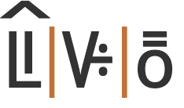
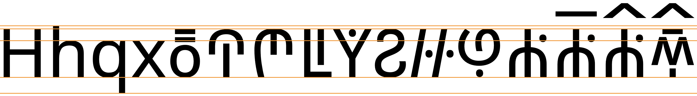

This page brings together basic information about the Bamum script and its use for the Bamun language. It aims to provide a brief, descriptive summary of the modern, printed orthography and typographic features, and to advise how to write Bamun using Unicode. This page restricts itself to discussion of the modern syllabary, and does not cover earlier pictograms and logograms.
The Bamum script was used for administrative and educational purposes and documentation until the 1930s, when the script's inventor, King Nyoja, was exiled by the French and German colonial powers. The libraries and the printing press were destroyed, many of the books in the Bamum script were also destroyed, and the teaching of the script in schools was banned.
After Cameroon became independent in 1960, Seidou Njimoluh the son and heir of the script's inventor, King Nyoja, collected the Bamum manuscripts and other materials that survived and put them in his father's museum.o
Today the Bamum Scripts and Archives Project is trying to revive the Bamum script by teaching it to young people. o
ꚠ ꚡ ꚢ ꚣa-ka-u-ku (A name for the script, using its first 4 letters.)
The Bamum script was invented by King Ibrahim Njoya (r. 1895 – 1931). It was originally a collection of around 500 logographs, adapted over 5 major revisions, and sometimes written vertically, top to bottom. No significant works are thought to have survived from this period, and we do not examine these characters here. Their use appears to have been restricted to only a few members of the palace.ws
A final overhaul of the script in 1910 reduced the characters to the syllabic set described here. The koqndon and tukwentis diacritics were introduced at that time to extend the repertoire.
The Bamum script is a syllabary. Letters typically represent a combination of consonants and vowels. See the table to the right for a brief overview of features for the modern Bamum orthography.
Bamum text runs left to right in horizontal lines.
Words are separated by spaces. The script is unicameral.
This is a simple syllabary where letter shapes don't follow any systematic pattern. Bamum has 78 basic letters, but A6F0 can be added to a base letter to expand the repertoire. In many cases this shortens the vowel and adds a glottal stop, but sometimes it makes other sound changes. In 2 cases A6F1 also produces a change in sound.
Using 6 letters and the 2 aforementioned diacritics, it is possible to write 11 standalone vowels, most of which come in pairs, ending with and without a glottal stop.
Syllables beginning with a consonant are written using 73 basic letters, plus the same 73 letters with A6F0, plus digraphs for 24 additional CV syllables; giving a total of 170 syllables. A few of these have built-in codas that are not the glottal stop.
Where one of the previously described syllables doesn't end with a coda, 12 syllable-final consonant sounds can be applied by killing the vowel with A6F1.
The spoken language is tonal, but tones are not written, although some syllables may be dedicated to a particular tone.
These characters have the Unicode general category of number, but also serve as ordinary syllables.
Punctuation
Show꛲␣꛳␣꛴␣꛵␣꛶␣꛷
Items to show in lists
Phonology
These are sounds of the Bamun language.
Click on the sounds to reveal locations in this document where they are mentioned.
Phones in a lighter colour are non-native or allophones. Source Wikipedia.
Vowel sounds
Plain vowels
Open syllables have vowels of normal length, but vowels followed by a glottal stop are half-long /ˑ/.
Consonant sounds
labial
alveolar
post-
alveolar
palatal
velar
labialized velar
labio-velar
glottal
stops
pb
td
kɡ
kʷɡʷ
k͡pg͡b
ʔ
pre-nasalised
ᵐpᵐb
ⁿtⁿd
ᵑkᵑɡ
ᵑkʷᵑɡʷ
ᵑ͡ᵐk͡pᵑ͡ᵐg͡b
fricatives
fv
sz
ʃʒ
xɣ
pre-nasalised
ᵐfᵐv
ⁿsⁿz
ᶮʃ ᶮʒ
nasal
m
n
ɲ
ŋ
ŋʷ
ŋ͡m
approximant
w
l
j
trill/flap
r
Some transcriptions include an x to indicate a slight voiceless velar fricative (according to Ward) that occasionally follows ɯ and other close vowels. It has been omitted here.r
Tone
Bamum has 5 tones: à low, á high, ā mid, ǎ rising, â falling.wl,#Tones
Observation: Evidence needed as to whether or not they are indicated in the orthography.
Structure
Most Bamum words are syllables of the form CV(C).d,584
The closing consonant of a syllable can only be one of p t m n ŋ.d,584
Syllables
Observation: It was difficult to find information about the Bamum syllabary, and the phonetic values of the symbols had to be interpreted from different transcriptions, which occasionally appeared to be inconsistent. The lists below use Wikipedia as the basis for the plain syllables and those with diacritics. There appear to be some anomalies in the Wikipedia data and an attempt was made to address those. The information about digraphs comes from Omniglot. The following should be considered a best estimate of the correspondences between letters and sounds, given the information available.
Vowels
ꚩ␣ꚩ꛰␣ꛉ꛰␣ꚢ␣ꚤ␣ꚤ꛰␣ꚧ꛱␣ꚧ␣ꚧ꛰␣ꚠ␣ꚠ꛰
Bamum has 6 characters dedicated to vowel-only syllables. The full set of 11 Bamum vowel syllables is produced by adding one of 2 combining marks. The set of unique code points involved is:
ꚠ␣ꚢ␣ꚤ␣ꚧ␣ꚩ␣ꛉ␣꛰␣꛱
CV(C) basic letters
The following letters are all used for syllables that begin with a consonant. (The vowel-related letters above are omitted.)
The 80 syllabic symbols of the Bamum syllabary are not sufficient to cover all the sounds of the Bamun language. To extend the repertoire, 3 approaches are used.
Add the diacritic A6F0.
Add the diacritic A6F1.
Combine syllable symbols to create new sounds.
Use of kɔʔⁿdɔn
꛰
A6F0 changes the sound of a syllable. This most commonly involves shortening the vowel and adding a final glottal stop while removing any existing syllable-final consonants, eg. compareꚻkɛtꚻ꛰kɛʔ
Sometimes prenasalisation is also removed,ws,266 eg. compareꛇⁿteꛇ꛰teʔ
In other cases, the sound change involves syllable-final nasalisation rather than a glottal stop, eg. compareꛝpiꛝ꛰pĩ
In a number of other cases, the change is much more idiosyncratic, eg. compareꛙfɔmꛙ꛰ᵐvɔp
Combinations of each of the basic letters with A6F0.
Bamoun letters don't interact, so no special shaping is needed.
Base characters carry only a single combining mark.
Typographic units
Word boundaries
tbd
Spaces are used to separate words in Bamum.
Bamum uses hyphens inside words, eg. these 2 words are from the sample above
ꛧ-ꚳꛊꚤmᵇᵃᵃ-mpᵉembaa-mpee
ꛨ-ꛅꚧ꛱tᵋᵗ-pᵚˣɔ͓tɛt-pɯʔ
Graphemes
Bamum graphemes are single glyphs with an optional combining mark above, and text units can be handled adequately by Unicode grapheme clusters.
Grapheme clusters
Base combining_mark?
Each syllable is a grapheme cluster on its own, but also when combined with koqndon or tukwentis.
Click on the text version of this word to see more detail about the composition.
ꚳꚣꚧ꛱ꛦꚧ꛱

ꚳ꛰ꚴꚢ
Punctuation & inline features
Phrase & section boundaries
꛵␣꛶␣꛴␣꛳␣꛷
Bamum has its own punctuation marks. The punctuation marks correspond closely to Western equivalents, probably because the Western punctuation was the inspiration.
phrase
꛵
꛶
꛴
sentence
꛳
꛷
Other inline features
Other punctuation
꛲ introduces proper-nouns, or can be used to disambiguate homographs.
Line & paragraph layout
Line breaking & hyphenation
By default, lines are broken at inter-word spaces. As in almost all writing systems, certain punctuation characters should not appear at the end or the start of a line.
Line-edge rules
As in almost all writing systems, certain punctuation characters should not appear at the end or the start of a line. The Unicode line-break properties help applications decide whether a character should appear at the start or end of a line.
The following list gives examples of default behaviours for some of the characters used in Bamum. Context may affect the behaviour of some of these and other characters.
Click/tap on the characters to show what they are.
꛳ ꛴ ꛵ ꛶ ꛷ should not begin a new line.
Baselines, line height, etc.
Bamum uses the so-called 'alphabetic' baseline, which is the same as for Latin and many other scripts.
Glyphs in the Bamum syllabary are typically the same height and lack ascenders or descenders. However, most glyphs can have one of 2 combining marks above, which significantly increase the vertical height.
To give an approximate idea, fig_baselines compares Latin and Bamum glyphs from the Noto font. The basic height of Bamum letters is set at the Latin cap-height, however combining marks reach well beyond the Latin ascenders, creating a need for larger line spacing.

Font metrics for Latin text compared with Bamum glyphs in the Noto Sans Bamum font.